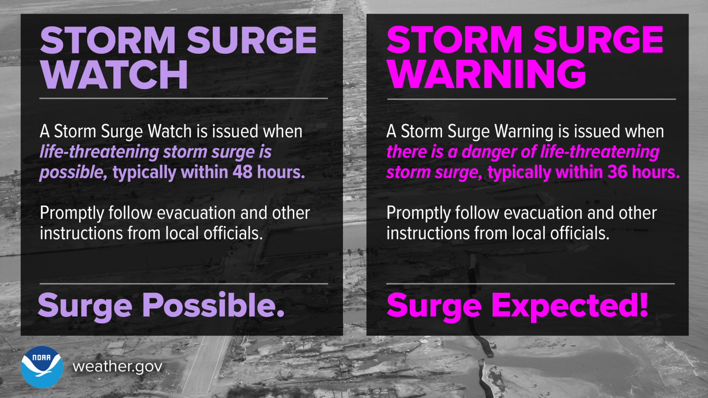
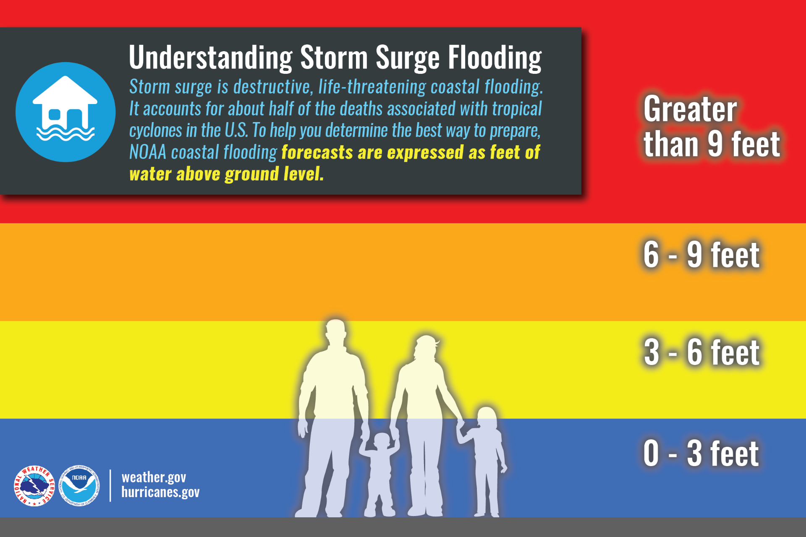
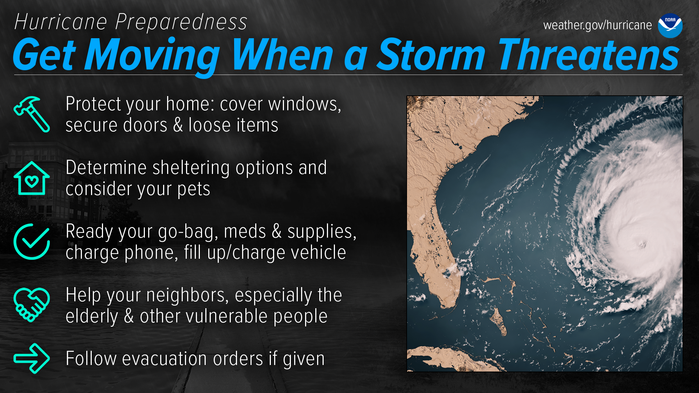
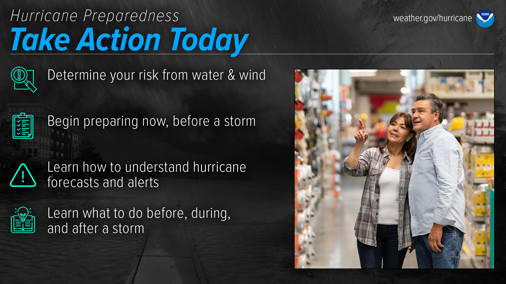
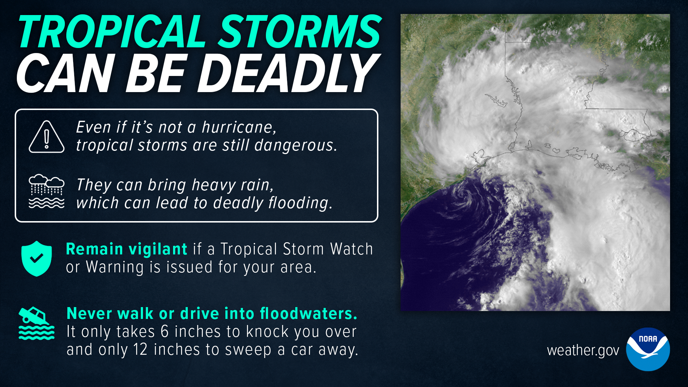
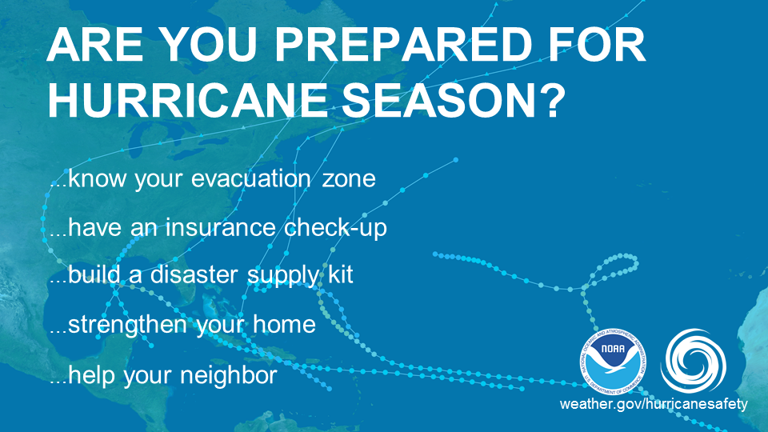
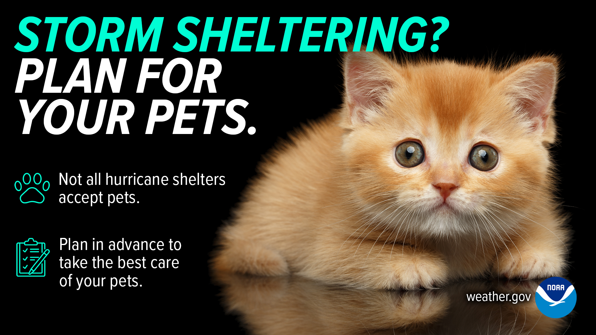
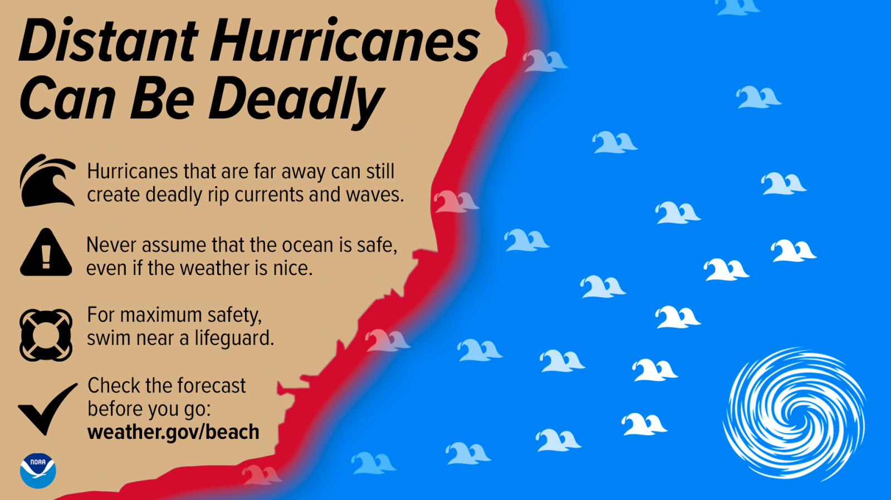
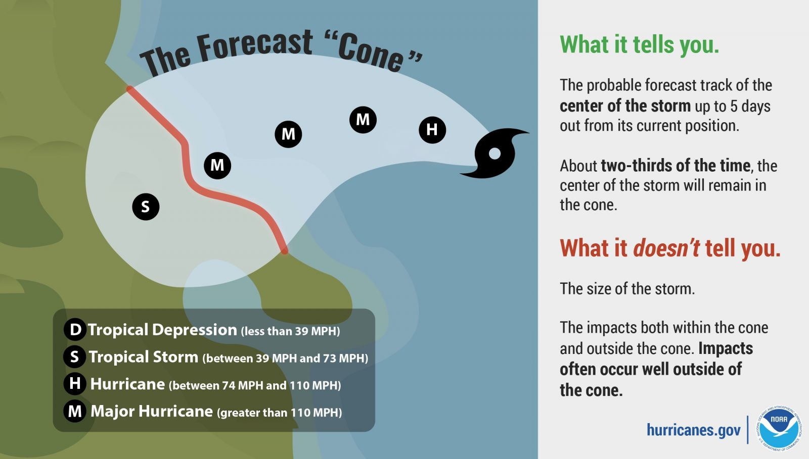

Hurricane Watch vs. Warning — know the difference before the storm — NOAA
Hurricane Watch
Hurricane conditions possible within 48 hours. Finalize preparations — be ready to evacuate or shelter in place.
Hurricane Warning
Hurricane conditions expected within 36 hours. Complete all preparations immediately. If ordered to evacuate — LEAVE NOW.
Storm Surge Watch vs. Warning

Storm Surge Watch vs. Warning — storm surge is the deadliest hurricane hazard — NOAA
⚠ Storm surge is the #1 killer in hurricanes
Storm surge is a wall of ocean water pushed ashore by the storm. Just 6 inches of fast-moving water can knock you off your feet. 2 feet can sweep away a car.

Storm surge depth chart — even shallow surge is extremely dangerous — NOAA
When the Storm Threatens

When storm threatens — act now — NOAA
Shelter in Place — Step by Step
Go to your pre-designated interior room with no or few windows
Bring your go bag, water, food, radio, and medications
Close and lock all interior doors
Stay away from windows, skylights, and glass doors
Keep a battery radio on for official updates
Do NOT go outside for any reason while the storm is active
Take Action Now
Fill bathtubs with water for flushing and cleaning if water supply fails
Turn refrigerator to the coldest setting to keep food safe longer
Charge all phones and power banks immediately
Text rather than call — texts get through when voice calls cannot

Take action — don't wait — NOAA
⚠ DO NOT go outside during the eye of the storm
The calm during the eye can last 30–60 minutes. The violent eyewall returns with equal or greater force from the opposite direction. Many people die going outside during the eye thinking the storm is over.
Tropical Storms Can Be Deadly

Do not underestimate tropical storms — they can be as deadly as hurricanes — NOAA
Never walk through floodwaters — 6 inches can knock you down
Avoid crossing flooded roads or bridges by car
Stay away from storm drains, streams, and rivers during heavy rain
Flash flooding can happen miles from the storm's centre

Flash flood warning — act immediately if issued for your area — NOAA
Generator Safety
⚠ NEVER run a generator indoors — carbon monoxide kills silently
Carbon monoxide (CO) is odourless and colourless. Running a generator inside a home, garage, or carport — even with windows open — can be fatal within minutes.
Run generators outdoors only, at least 20 feet from any window or door
Never refuel a generator while it is running — let it cool first
Do not connect a generator directly to your home wiring — use heavy-duty outdoor extension cords rated for the load
If you feel dizzy, nauseous, or confused near a generator — get fresh air immediately and call for help
Plan for Your Pets

Have a pet plan — not all shelters accept animals — NOAA
Not all shelters accept pets
Identify a pet-friendly shelter or hotel ahead of time. Prepare a pet kit: food, water, medications, carriers, leash, vet records, and a recent photo of your pet in case you get separated.
Rip Currents & Coastal Hazards

Distant hurricanes generate rip currents along beaches — stay out of the water — NOAA
Stay out of the ocean during and after any tropical storm or hurricane
Rip currents can form when a hurricane is hundreds of miles away
If caught in a rip current — swim parallel to shore to escape, not directly against it
Understanding the Forecast Cone

The cone shows where the centre of the storm may go — but dangerous winds extend far beyond the cone — NOAA
The cone does NOT show the storm's size
The forecast cone only shows possible paths for the storm's centre. Damaging winds, rain, and surge can extend well beyond the cone's edges. All of the Bahamas should prepare whenever a storm threatens the region.